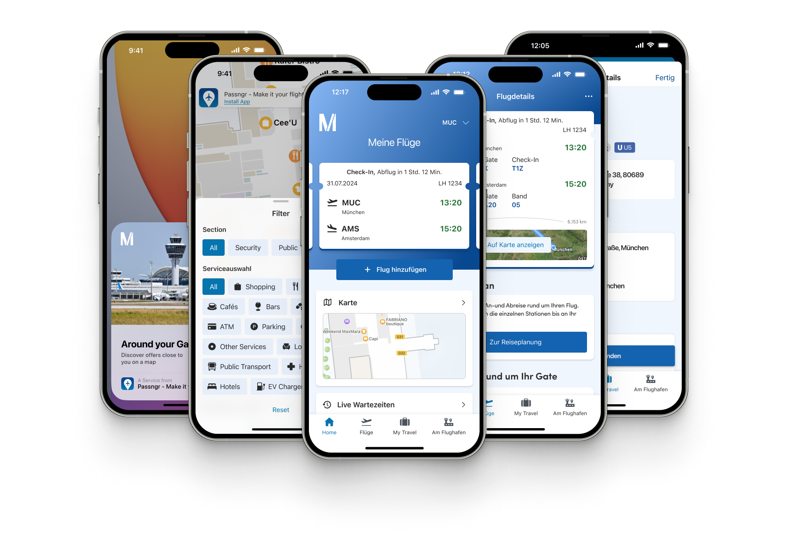

Passngr
Airport
App
The Passngr App is the official mobile app of Munich Airport, designed to support travelers with real-time flight updates, indoor navigation, and access to airport services. When our collaboration started, the app had not been updated in several years. It needed both technical and UX improvements to meet modern expectations and function reliably again. Once stable, we shifted focus toward improving the overall passenger experience and laying the groundwork for new features.

The objective was to turn a neglected app into a reliable, user-friendly travel companion that supports passengers throughout their travel journey. At the beginning of the project, our focus was on restoring core functionality, which only resulted in small design changes. From there, the team began prioritizing new features - ranging from enhanced wayfinding to personalized offers - that would add value to the traveler experience.
Once that was stable, I could focus on what the app was actually for: helping someone navigate an unfamiliar terminal, find their gate, and get to the right place under time pressure.
Taking over an app that hadn’t been updated in years came with its own set of challenges. The UX lacked clarity, and outdated features had impacted user trust. Rebuilding that trust meant focusing on simple, consistent, and reliable interactions. As the backend had limited capacity throughout, every feature decision was made very carefully.
I redesigned the flight detail view to surface what passengers actually need at a glance, restructured the wayfinding flow to reduce friction at the point where people are most stressed, and rebuilt services discovery so the terminal's actual offer was findable.